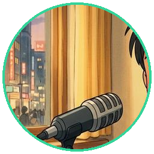

"Halo, selamat pagi! Selamat datang di kantor KS Group. Senang sekali bisa bertemu dengan jurnalis cilik berprestasi seperti Mishka. Ada yang bisa saya bantu?"

Selamat Mishka! Kamu telah mempraktikkan etika jurnalisme santun, menguasai kata tanya ADiKSiMBa, dan membedah idiom wirausaha (gulung tikar & banting tulang) dengan analisis tajam dan penuh rasa hormat!